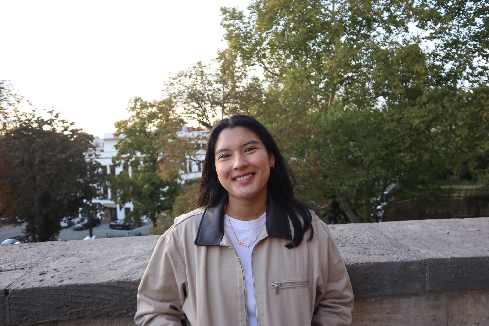

I'm Alexia — born in Lima, based in Leipzig, and studying Media & Communication Science at Universität Leipzig. I build communication ideas through strategy, storytelling, and visual thinking.
Since 2022, I've been building a practice at the intersection of media, communication, and visual storytelling — from concept development to campaign thinking and public-facing execution.
I am especially interested in how brands, institutions, and events can communicate in ways that feel both strategic and human. My work combines structure, clarity, and visual sensibility.
2 projects shown
I'm open to creative collaborations, communications projects, and marketing opportunities. If you'd like to work together, I'd love to hear from you.

✦ Open to work
Alexia Cam
Media & Communication Science student
at Universität Leipzig — focused on strategy, storytelling, and brand communication